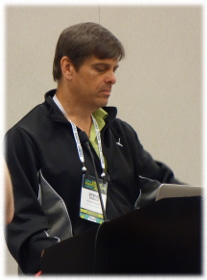
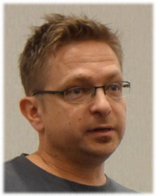

Network filesystem topics
Steve French and Michael Adam led a session in the filesystem-only track at the 2016 Linux Storage, Filesystem, and Memory-Management Summit on network filesystems and some of the pain points for them on Linux. One of the main topics was case-insensitive file-name lookups.
French said that doing case-insensitive lookups was a "huge performance issue in Samba". The filesystem won't allow the creation of files with the wrong case, but files created outside of Samba can have mixed case or file names that collide in a case-insensitive comparison. That could lead to deleting the wrong file, for example.

Ric Wheeler suggested that what was really being sought is case-insensitive lookups but preserving the case on file creation. Ted Ts'o said that he has never been interested in handling case-insensitive lookups because Unicode changes the case-folding algorithm with some frequency, which would lead to having to update the kernel code to match that. Al Viro noted that preserving the case can lead to problems in the directory entry (dentry) cache; if both foo.h and FOO.H have been looked up, they will hash to different dentries.
Ts'o said that they would need to hash to the same dentry. Wheeler suggested that the dentry could always be lower case and that the file could have an extended attribute (xattr) that contains the real case-preserved name. That could be implemented by Samba, but there is a problem, as Ts'o pointed out: the Unix side wants to see the file names with the case preserved.
David Howells wondered if the case could simply be folded before the hash is calculated. But the knowledge of case and case insensitivity is not a part of the VFS, Viro said, and the hash is calculated by the filesystems themselves. Ts'o said that currently case insensitivity is not a first-class feature; it is instead just some hacks here and there. If case insensitivity is going to be added to filesystems like ext4, there are some hurdles to clear. For example, there are on-disk hashes in ext4 and he is concerned that changes to the case-folding rules could cause the hash to change, resulting in lost files.
Adam said that handling the case problem is interesting, but there are other problems for network filesystems. He noted that NFS is becoming more like Samba over time. That means that some of the problems that Samba is handling internally will be need to be solved for NFS, as well, though there will be subtle differences between them.
Both the "birth time" attribute for files and rich ACLs were mentioned as areas where
standard access mechanisms are needed, though there are plenty of others.

The perennially discussed xstat() system call was suggested as that interface, but discussions of xstat() always result in lots of bikeshedding about which attributes it should handle, Viro said. Ts'o said that "people try to do too much" with xstat(). In fact, there was a short session on xstat() later in the day that tried to reduce the scope of the system call with an eye toward getting something merged.
If there are twenty problems that can't be solved for network filesystems and five that can, even getting three of those solved would be a nice start, French said. There are issues for remote DMA (RDMA) and how to manage a direct copy from a device, for example. There are also device characteristics (e.g. whether it is an SSD) that applications want to know. Windows applications want to be able to determine attributes like alignment and seek penalty, but there is no consistent way to get that information. In addition, French said he doesn't want to have to decide whether a filesystem is integrity protected, but wants to query for it in some standard way.
Christoph Hellwig has been suggesting that filesystems move away from xattrs and to standardized filesystem ioctl() commands, French said. Ts'o said that the problem with xattrs is that they have become a kind of ASCII ioctl(); filesystems are parsing and creating xattrs that don't live on disk. At that point, the time for the session expired.
| Index entries for this article | |
|---|---|
| Kernel | Filesystems/Network |
| Conference | Storage, Filesystem, and Memory-Management Summit/2016 |